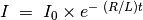
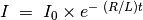

Réponse transitoire de circuits RL
Objectif
Explorer la nature du courant et de la tension quand un échelon de tension est appliqué à une résistance et un bobinage en série. En mesurant la tension en fonction du temps aux bornes du bobinage, on peut calculer son inductance.


Dans un circuit RL,  , équation
qui se résout en
. Le
coefficient du terme exponentiel R/L peut être déduit du graphique de la
tension aux bornes du bobinage. La résistance du bobinage doit être
incluse dans les calculs,
, équation
qui se résout en
. Le
coefficient du terme exponentiel R/L peut être déduit du graphique de la
tension aux bornes du bobinage. La résistance du bobinage doit être
incluse dans les calculs,  .
.
Procédure
- Le bobinage est la bobine de 3000 tours
- Cliquer sur les boutons Échelon 0->5V et Échelon 5->0V pour afficher les graphiques
- Ajuster l’échelle horizontale, si nécessaire, et recommencer.
- Calculer la valeur de l’inductance
- Insérer un noyau en fer dans le bobinage et recommencer
Discussion
La réponse transitoire du circuit RL est montrée sur la figure. La courbe exponentielle est modélisée pour extraire la valeur de L/R. La résistance de la bobine est mesurée en la comparant avec la résistance externe connue, en courant continu. A2 est connecté à OD1 pour une mesure plus précise de la résistance du bobinage.
Les tensions appliquées sont positives, mais le graphique va vers des tensions négatives, pourquoi?
Quel était le courant avant le début de l’échelon 5->0V? Quelle est la force contre-électromotrice (fcem)?
Recommencer avec deux bobinages en série, (a) en les plaçant l’un loin de l’autre, (b) en les plaçant l’un sur l’autre, (c) après changement d’orientation de l’un des deux. On peut voir l’effet de l’induction mutuelle.